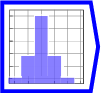
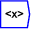
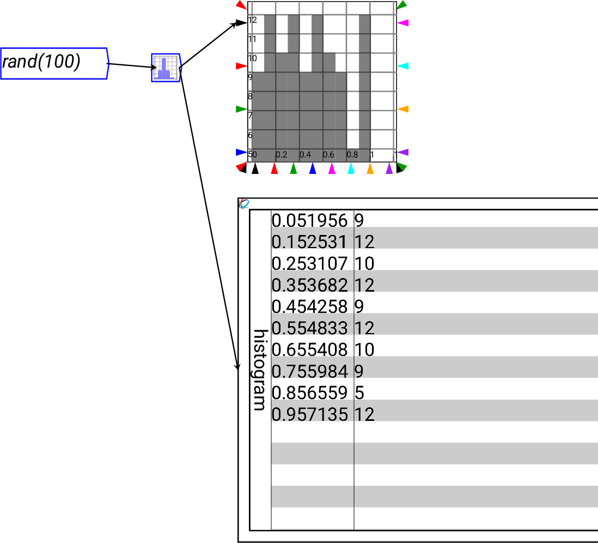

Next: Covariance
Up: Statistical Operations
Previous: -th moment
Contents

The operator can be placed on the canvas in two ways:
- From the Statistics (``statistics'') toolbar

;
or
- By typing the letters ``histogram'' on the canvas and then pressing
the Enter key
Computes the histogram along a named dimension of all elements present.
If the dimension is not named, then the histogram is over all elements
present in the tensor. The number of bins is specified by the numeric
argument to the operation.

An example usage of the histogram operation